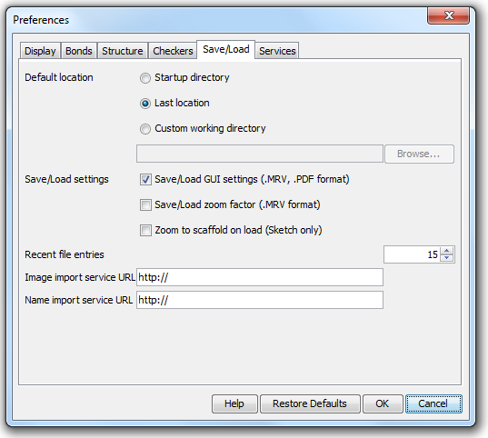

MarvinSketch : Save Load

- Default location: the folder from which to load or to save molecules may be set by the user.
- Startup directory: the folder where the command to start the application was given.
- Last location: the last folder used for opening or saving a structure.
- Custom working directory: a user-defined folder. If a molecule is loaded from another folder, then the file's location will be offered for saving.
- Default file format determines which type is offered by default when structures are saved to file.
- Save/Load settings
- Save/Load GUI settings (.MRV, .PDF format) allows storing and loading of display options like background color, font type, stereo labels, atom indices etc. in addition to the chemical structure itself. This option can only be used with MRV and PDF formats and it is selected by default.
Save/Load zoom factor (.MRV format) stores and loads the zooming scale of the structures. This option can only be used with the MRV format.
- Zoom to scaffold on load (Sketch only) sets the zooming scale to 'Scaffold' if the loaded file contains defined R-groups, so the R-group definitions might not be seen on the canvas without scrolling. The 'Zoom level' dropdown list on the General Toolbar is supplemented with 'Scaffold' and 'R1, R2, R3...' only when there are defined R-group(s). Without R-group definitions the zooming scale for the loaded structure(s) will not be modified, the last zooming scale will be used.
When this option is switched off in the Preferences menu then MarvinSketch opens the new file with the last zoom level.
- Recent file entries defines the number of files in the Recent files list in the File menu, with values between 1 and 10.
- Image import service URL URL of a server on which a chemical structure recognition program runs can be given.
- Name import service URL URL of a server on which a chemical name recognition program runs can be given.